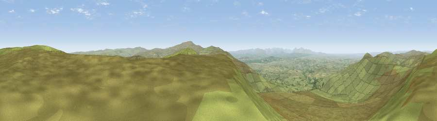

Viewpoint near Renwick
#3068 in England · top 5% of its area beats it · near RenwickWhere it is
The exact computed spot (NY 64625 44075). Click the marker for map links.
The view, rendered

A 360° render of this exact spot computed from the terrain model, tree cover and land cover — summer colours, afternoon light, calibrated against photographs of famous viewpoints. Real trees, hedges and buildings will differ in detail.
The panorama
Grey silhouette: terrain skyline in each direction (720 bearings, Earth curvature and refraction included). Dashed green: skyline with trees (+15 m) and buildings (+8 m) as obstacles. Blue strip: how far the ground is visible on each bearing.
Where the view opens
Wedge length = distance to the farthest visible ground on that bearing (vegetation-aware). Rings at 10, 25 and 50 km.
What fills the view
93% grassland · 3% cropland · 3% woodland
Angular shares of the visible panorama (visual magnitude), not map area. Landscape diversity 0.14 (0–1 Shannon).
Key numbers
More beautiful places nearby
The staircase of upgrades: each row has a higher view potential than everything closer. Driving times are estimates from straight-line distance, calibrated against real road routing — check an actual route before setting out.
| Place | Direction | Drive | Score |
|---|---|---|---|
| Viewpoint near Renwick | SSE · 0 km | ~2 min | 77.0 |
| Viewpoint near Melmerby | S · 6 km | ~12 min | 78.1 |
| Cross Fell | SSE · 10 km | ~20 min | 78.7 |
| Viewpoint near Cumrew | NW · 12 km | ~22 min | 78.8 |
| Barrock Fell | W · 18 km | ~31 min | 81.1 |
| Viewpoint near Watermillock | SW · 29 km | ~46 min | 82.6 |
| Viewpoint near Watermillock | SW · 30 km | ~47 min | 83.5 |
| Skiddaw South Top | WSW · 41 km | ~61 min | 85.8 |
54.79031, -2.55165 · source: screening · position refined by local search. Computed location — check access rights before visiting.